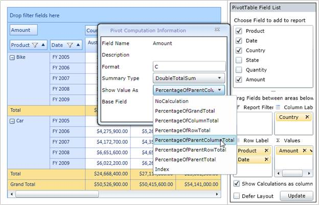

To show the value cell as a percentage of its summary cells, use the following code snippet:
|
[XAML] <syncPivotGrid:PivotGridControl.PivotCalculations><syncPivotBase:PivotComputationInfo FieldName="Amount" Format="C" CalculationName="Amount Total" CalculationType="PercentageOfParentTotal" BaseField="Country" /> </syncfusion:PivotGridControl.PivotCalculations> |
|
[C#] this.pivotGrid1.PivotCalculations.Add(new Syncfusion.PivotAnalysis.Base.Silverlight.PivotComputationInfo { FieldName = "Amount", Format = "C", CalculationName = "Total Amount", CalculationType = Syncfusion.PivotAnalysis.Base.Silverlight.CalculationType.PercentageOfParentTotal, BaseField = "Country" }); |
|
[VB] Me.pivotGrid1.PivotCalculations.Add(New Syncfusion.PivotAnalysis.Base.Silverlight.PivotComputationInfo() With {.FieldName = "Amount", .Format = "C", .CalculationName = "Total Amount", .CalculationType = Syncfusion.PivotAnalysis.Base.Silverlight.CalculationType.PercentageOfParentTotal, .BaseField = "Country"}) |
To change the value cell’s calculation for different views dynamically, do the following procedure through Pivot Schema Designer control:
1. Click an arrow at the respective PivotComputationInfo field at the value fields section of the Pivot Schema Designer.
2. In the Pivot Computation Information window pop-up, change the view by selecting the ‘Show Value As’ combo box as shown in the below image:

Figure 42 Showing Different Calculation Functions in Computational Window of Pivot Schema Designer